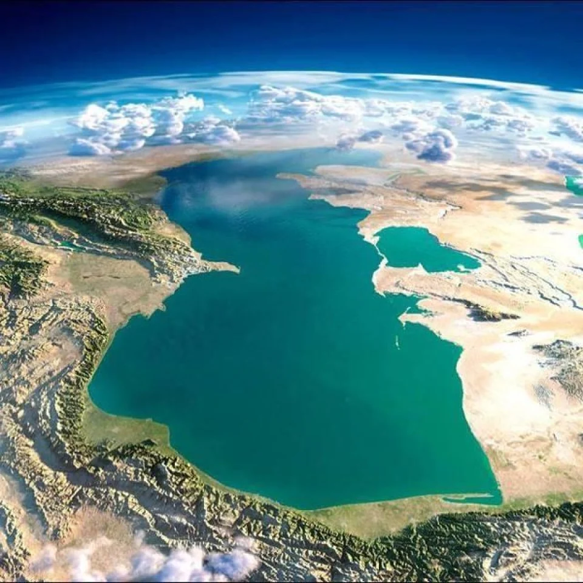

A Földön található tavak rendkívül változatosak: a hatalmas kiterjedésű, szinte tengernek beillő vízfelületektől a gigantikus mélységekig terjednek. A Föld legnagyobb tava a Kaszpi-tenger, a legmélyebb édesvízi tava pedig a szibériai Bajkál-tó.

Tó is, meg tenger is: Bár a nevében tenger, geológiai szempontból a világ legnagyobb tava (területe kb. 371 000 km², ami nagyobb, mint Németország). Sótartama viszont kb. 12 ezrelék, ami kb. harmada az óceánokénak, de magasabb egy átlagos édesvízi tóénál.
Tudj meg többet!| tó | ország | édes vagy sós |
|---|---|---|
| Kaszpi-tenger | Oroszország | sós |
| Felső-tó | Kanada | édes |
| Viktória-tó | Tanzánia | édes |